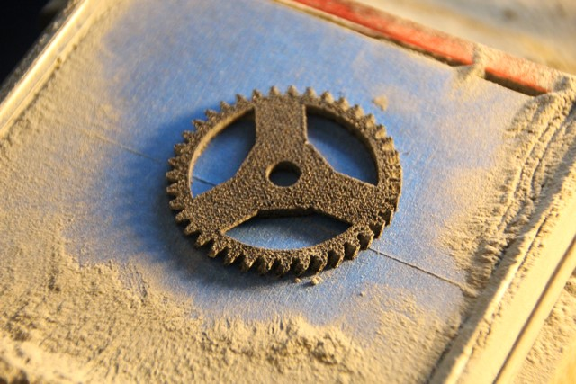

Starshade Technology Project
JPL Summer 2016

I spent the summer of my junior year (2016) in Pasadena, CA at JPL working with the Starshade Technology Project team. Starshade is a 22m external occulter that launches with a space telescope to image exoplanets. As a large deployable structure, Starshade can be difficult to grasp visually, specifically how individual components move during deployment. Around lab, there are a ton of huge individual testbeds, but none that show all of the pieces put together. So with the other two summer interns, I designed various configuration models that were designed to fit on a conference table as an engineering design tool.
We decided 1/20 scale would reduce everything to a manageable size. However, at that scale, features would be on the order of 0.010” to 0.100”, which can be hard to achieve and fragile. We decided to use additive manufacturing to print the assembly in larger chunks wherever possible in order to reduce assembly of tiny pieces. We explored three very accessible 3D printing processes.
| Fused Deposition Modeling (FDM) Low-Resolution |
Selective Laser Sintering (SLS) Med-Resolution |
Stereolithography (SLA) High-Resolution |
|
|  | |||
| Process | Extruding melted filament | Fusing layers of powder together via high energy laser | Shining UV light onto a photoreactive resin |
| Layer Thickness | 0.002"-0.012" | 0.005" | 0.002"-0.004" |
| X-Y Resolution | Limited by filament diameter, ~0.070" | Limited by powder grain, typically ~0.005"-0.008" | Limited by resin polymerization, ~0.002"-0.003" |
| Recommended Min. Feature Size | 0.140" to achieve two passes of filament |
|
0.025"-0.035" |
| Print Bed Size | 8.4" x 6.3" x 8.7" | 13" x 13" x 20" | 25" x 25" x 21" |
| Finish | Smooth plastic, distinct layers | Grainy, similar to a sugar cube | Smooth with sharp edges, unnoticeable layers |
| Other Notes | Difficult to remove support material cleanly | Does not require support material | Vendor uses dissolvable support material |
We really loved the feel of the SLA printed parts we received because you could see every last accent we added to the design to give the parts more dimension, but it was ultimately 2-3 times more expensive than SLS, which was honestly also very impressive considering the size we were asking for. The only problem we faced was warping on the petals because of the broad, thin nature of the pieces, which naturally had thermal problems. Once we thickened up the members by about 5-10 thou everything was fine though. As a result, we ultimately created one high fidelity SLA model and one more cost effective SLS model.
However, we had design challenges with assembly when we noticed our test SLS parts had an extremely tight fit, and honestly had to be filed down a bit to fit together, while our SLA parts easily slid in and out of each other. Because of this, I decided to measure the dimensions of key features in the sample parts we received. Clearly, the SLS parts were significantly thicker than the SLA parts, or at least enough to change the fits we designed for.
In this process of designing, printing, and iterating, we got familiar with a lot of great resources around JPL’s campus. In particular, there is one lab that had a ton of rapid prototyping resources, and we tested a lot of our high-fidelity 3D prints there, since they had a Form2 and a Statasys Objet350 Connex2, “the Ferrari”. They also had a laser cutter we used extensively to make the conical optical shield (the gold foil on the inside). We even added perforations to get some of the detail of the origami design – you can see the curvature of the folding pattern on the gold foil.


Another thing I really appreciated about our mentor this summer, David Webb, was that every step of the way, he made sure we understood the structural design of any parts we were trying to imitate on the small model. There were a lot of cables in tension that we had to imitate with rigid beams, since it would be quite difficult to tension string on such a small and fragile mode.
Also, while we did a lot of contacting potential 3D printing companies ourselves, he joined us for several and helped us navigate asking the right questions to make sure you’re getting exactly what you want. For example, we learned that even though a lot of people think they want high resolution SLA parts, the features they want can be achieved by the normal resolution process so they just put your parts on the normal resolution print beds because of their limited high resolution beds. Even though we thought we wanted high resolution, the normal resolution print was still better than spec and achieved what we actually wanted.
And without further ado, here are the final models we made!


Because I stayed an extra couple of weeks, I got to create and put together the unfurling model, our only moving model. It was lots of fun, and since this was actually the first unfurling model in lab (the other larger ones are still in development), we got to learn some things about how to design the actual unfurling module!
We also got to assemble an optical shield for the 5m deployable truss that is already in lab. We learned about soft material bonding between kapton and foam. The foam has a thickness meant to prevent micro-meteroids ruining the opacity of the optical shield when they penetrate the Starshade. After several experiments with mass of epoxy used and the strength of the bond, we went through a [fairly] controlled process of rolling and transferring epoxy between sheets of material, and then cutting and attaching them together.